Объекты и функции.
Свойства объекта можно писать через точку или в квадратных скобках с кавычками.
Проверить свойство объекта можно через hasOwnProperty (возвращает Boolean).
У объекта есть свои методы, которые хранятся в __proto__ (ссылка на прототип родителя).
Глобальный объект Object является функцией, но и у него есть прототип.
Чтобы проверить это, в консоли нужно написать Object.prototype.
car.__proto__ === Object.prototype (true)
Массив наследуется от класса Array, но тот, в свою очередь, наследуется от Object.
[] => Array => Object
Создание объекта.
let car = {}; - один вариант
В ES5 аналогом классов были функции с большой буквы:
function
Car(name,
year,)
{
}
let
ford
=
new
Car('Ford',
2015);
Если мы выведем в консоль созданную переменную мы получим объект, первым прототипом которого будет наша функция-класс:
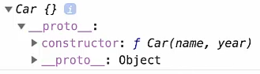
В функции-классе мы обращаемся к свойству будущего экземпляра класса с помощью ключевого слова this.
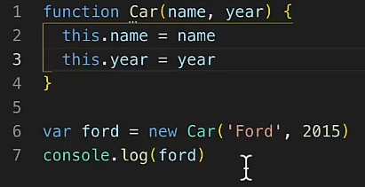
Оператор new, по сути, возвращает ключевое слово this.
В обращении к прототипу мы можем устанавливать методы класса-функции для всех последующих экземпляров класса:
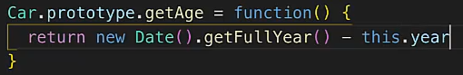
Поэтому, отображая экземпляр в консоли, мы получаем в прототипе метод функции-класса несмотря на то, что мы его ещё не использовали:
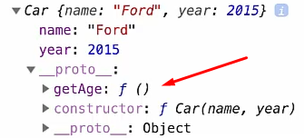
Но, конечно же, мы можем использовать методы класса для экземпляров:
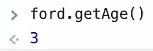
В классе для всех экземпляров можно задавать поля по умолчанию:
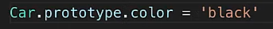
Мы можем переопределять дефолтные значения:
Объекты можно создавать через
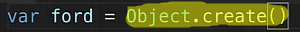
Первый параметр отвечает за прототип этого объекта.
Второй параметр описывает свойства данного объекта (в нашем случае – “ford”).
Поля (свойства) нашего объекта прописываются особым образом:
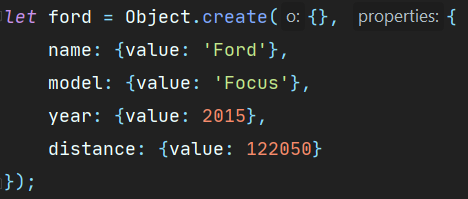
Можно прописывать и прототипы объекта:
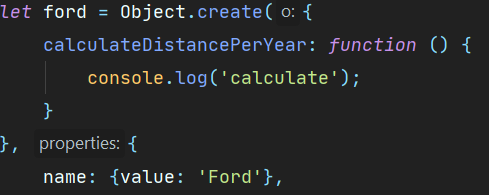
Существует дескриптор свойств (о них – в официальной документации). Одно мы уже использовали – value.
При перечислении свойств, если мы хотим их использовать, нужно ставить в дескрипторе enumerable: true. В консоли свойство подсветится ярким цветом.
Configurable отвечает за удаление, writable – за возможность изменять значения свойства.
Для установления и получения свойства мы используем дескрипторы get и set.
Когда мы будем обращаться к полю, геттер будет нам что-то возвращать.
Можно создавать свойство с помощью метода Object:
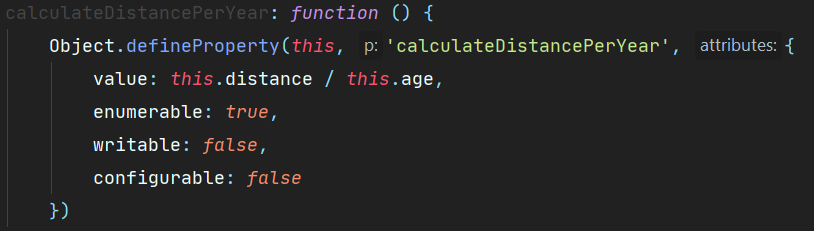
Пробежаться по всем ключам можно с помощью for.
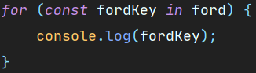
Мы можем не использовать в проверке методы и поля прототипа. Поставим условие на собственные свойства.
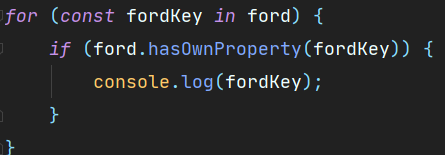
Можем вывести и значения:
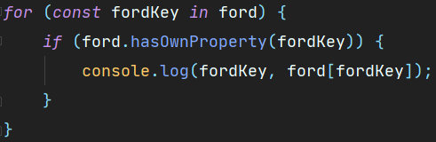
Второй способ получения ключей через метод Object. Метод возвращает массив ключей.
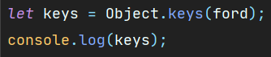
Либо пробегаем по образовавшемуся массиву и выводим значение каждого свойства:
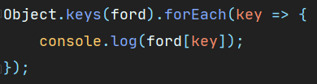
Замыкания в JS.
Создадим функцию для счётчика. Инициализируем счётчик внутри. Вернём новую анонимную функцию.
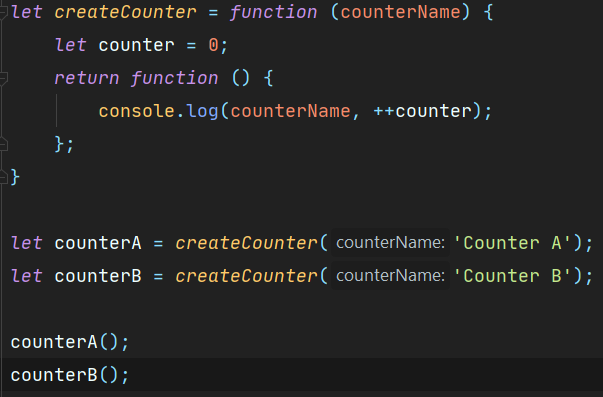
Получается, счётчик замыкается в каждой из функций автономно. И пока на функцию что-то ссылается, она не уничтожается, а существует:
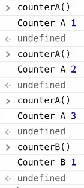
Для наглядности, внутри функцию заменим на объект. А в объекте уже будет функция.
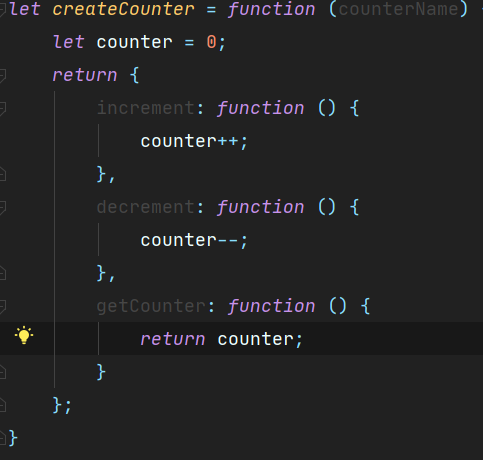
Вызываем те же функции с методами инкремента и декремента:
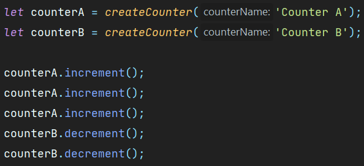
Принцип работы будет тот же:
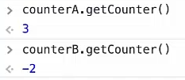
Что такое контекст.
Создадим объект.
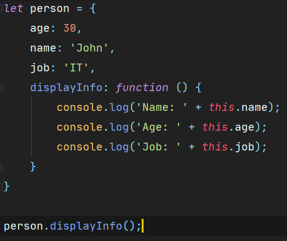
Будем выводить информацию спустя время.
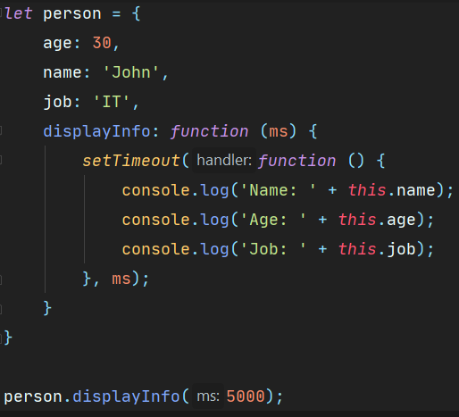
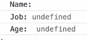
Всё выводится, но без значений.
Здесь потеря контекста (со стрелочной функцией такого нет, потому что у неё нет своего контекста).
Для обычной функции внутри функции объектом this будет глобальный объект Window:
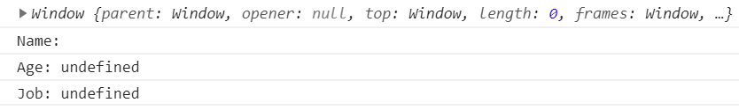
Для setTimeout своя область видимости – Window, поэтому когда мы прописываем новый this внутри его, объектом является именно глобальный объект.
3 способа борьбы для потери контекста (один из них – стрелочная функция).
С помощью замыкания.
Создадим внутри функции переменную, где будем использовать this.
Поскольку мы присвоили конкретный объект этой переменной, то внутри таймаута будем обращаться к ней и получать наши значения.
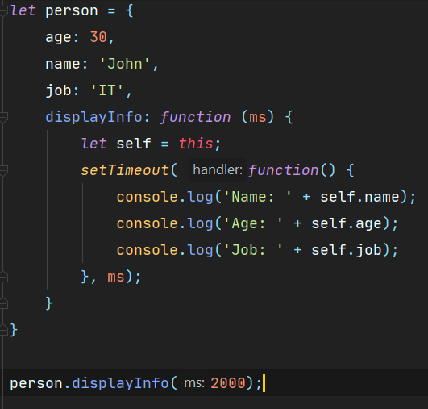
Иначе, используем метод функции bind(this), где this всё ещё тот самый, который нужен.
Методы для привязки контекста.
В обычном написании функция будет ссылаться на Object глобальный.
Bind первым параметром принимает нужный нам контекст.
Возвращает новую функцию с привязанным контекстом.
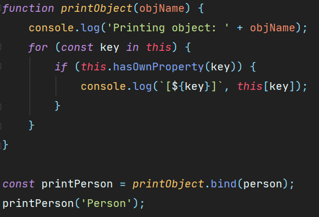
Можно вызвать другой метод для привязки функции, call. Он не возвращает функцию, он её вызывает. Первый параметр – контекст вызова, второй – аргумент (-ы) функции. Если их много – через запятую.
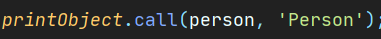
3 вариант – метод apply. Первый параметр – контекст, второй – аргументы в массиве.
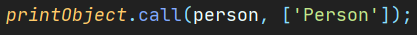